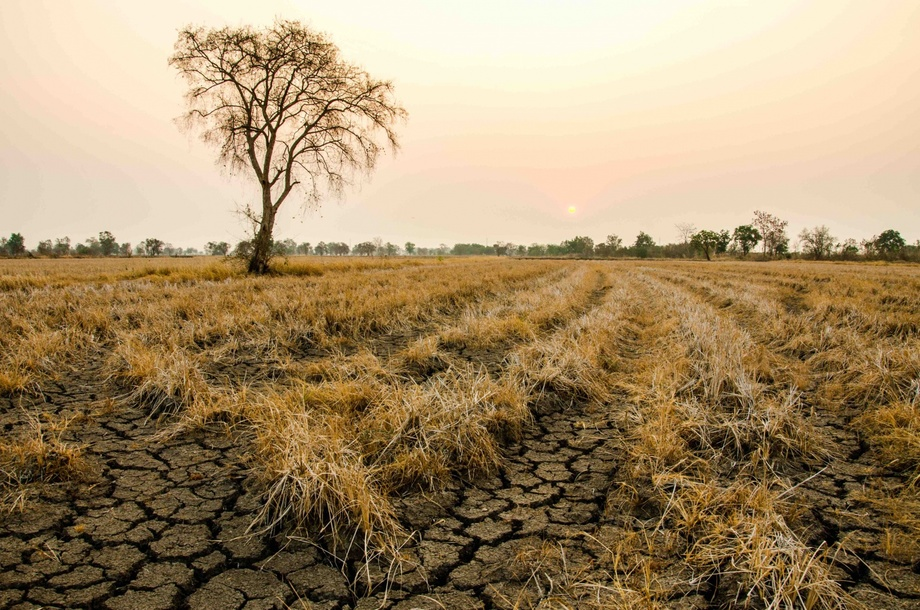

"Qishloq xo‘jaligida suv taqchilligi muammosi kritik nuqtaga yetgan."
2026-yilda suv tejovchi texnologiyalarga o‘tish iqtisodiy majburiyatga aylandi. Agar bu muammo hal etilmasa, oziq-ovqat xavfsizligi va eksport salohiyati pasayishi mumkin.
2026-yilga kelib qishloq xo‘jaligidagi suv taqchilligi shunchaki "ekologik qo‘ng‘iroq" emas, balki haqiqiy iqtisodiy ultimatumga aylandi. Bugungi kunda an’anaviy egatlab sug‘orish usuli o‘zining umrini butunlay o‘tab bo‘ldi; endilikda suvni isrof qilish — bu shunchaki resursni yo‘qotish emas, balki to‘g‘ridan-to‘g‘ri daromaddan voz kechish bilan barobar. Vaziyatning jiddiyligi shundaki, mintaqamizdagi asosiy suv manbalari bo‘lgan daryolar oqimi 15-20% ga kamaygan bir sharoitda, oziq-ovqatga bo‘lgan talab aholi soni o‘sishi bilan birga muttasil oshib bormoqda. Agar suv tejovchi texnologiyalar, xususan, tomchilatib va yomg‘irlatib sug‘orish tizimlari har bir fermer xo‘jaligida joriy etilmasa, biz nafaqat meva-sabzavot eksportida raqobatni boy beramiz, balki ichki bozorda asosiy oziq-ovqat mahsulotlari narxining keskin qimmatlashishiga guvoh bo‘lamiz.

Bu muammoning iqtisodiy majburiyatga aylangani shundaki, 2026-yilda suv yetkazib berish tannarxi va uning limiti har qachongidan ham qat’iy nazoratga olingan. Suvni tejaydigan texnologiyalarni o‘rnatish uchun ketadigan xarajat endi "ortiqcha yuk" emas, balki kelajakdagi bankrotlikdan sug‘urta hisoblanadi. Misol uchun, tomchilatib sug‘orish nafaqat suvni 40-50% gacha tejaydi, balki o‘g‘itlarni bevosita ildizga yetkazish orqali hosildorlikni ikki barobargacha oshiradi. Bu esa eksport salohiyatini saqlab qolishning yagona yo‘li. Aks holda, xalqaro bozorlarda bizning mahsulotlar tannarxi balandligi va sifati pastligi sababli o‘z o‘rnini yo‘qotadi. Oziq-ovqat xavfsizligi masalasi esa eng nozik nuqta — bugun suvni tejashni o‘rganmasak, ertaga eng oddiy poliz mahsulotlarini ham chetdan valyutaga sotib olishga majbur bo‘lishimiz mumkin. Shuning uchun ham raqamli monitoring, aqlli datchiklar va suvni qayta ishlash tizimlari 2026-yilning eng trenddagi va zaruriy vositalari bo‘lib qolmoqda.